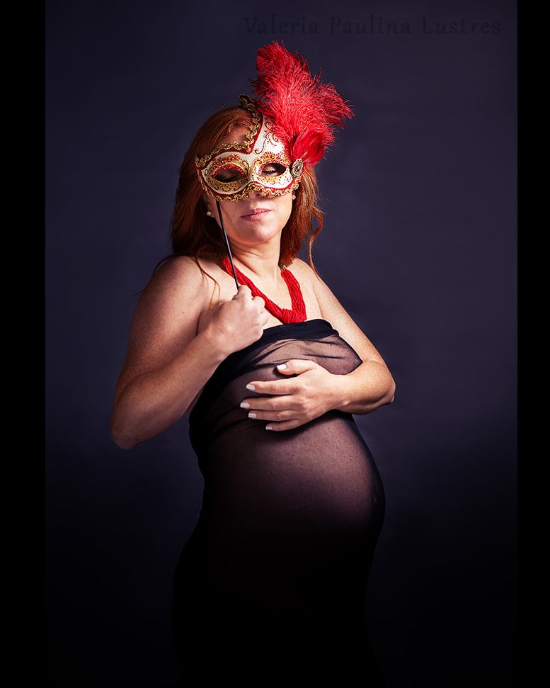
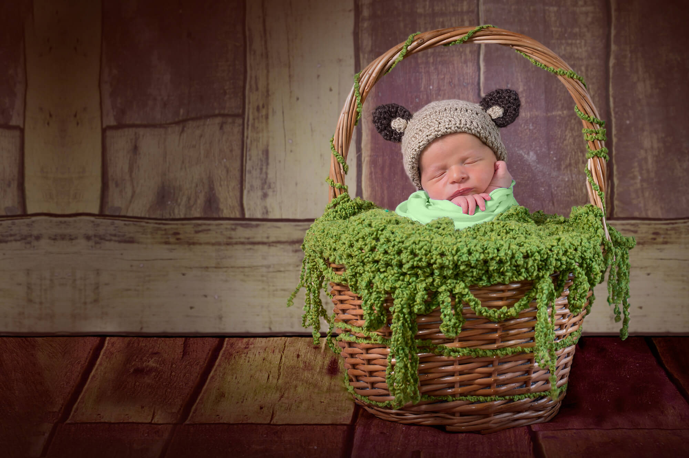
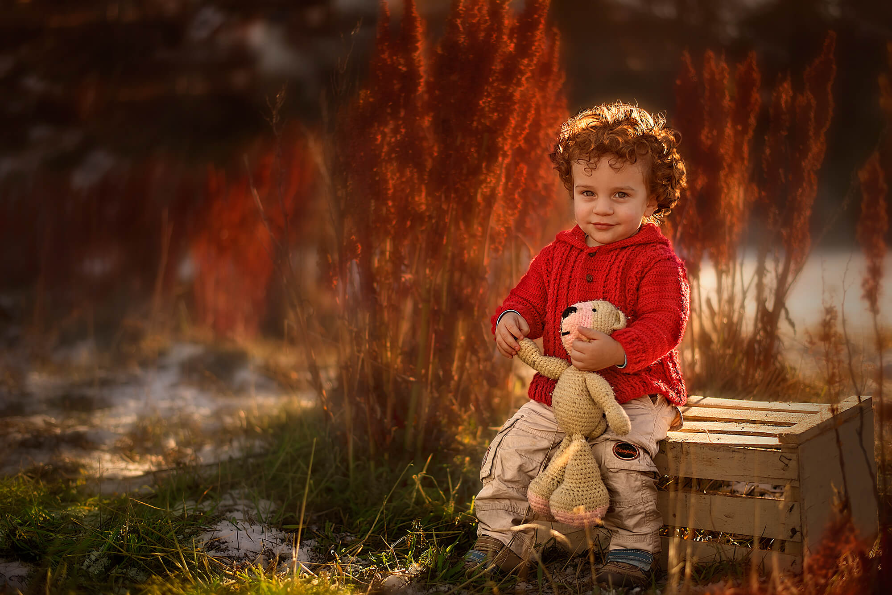
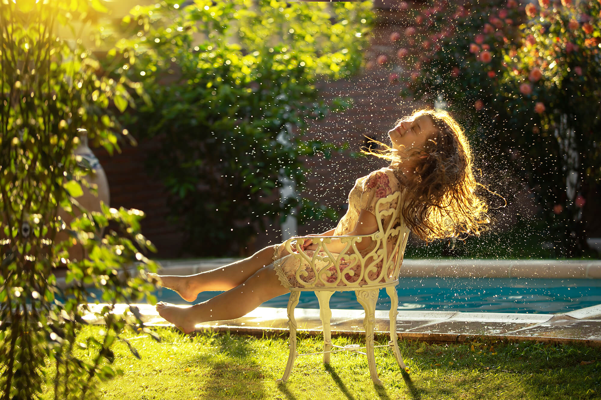
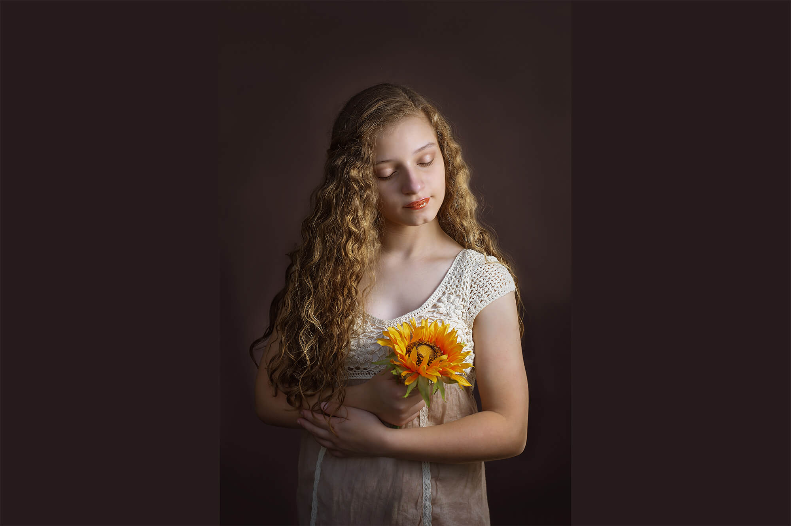
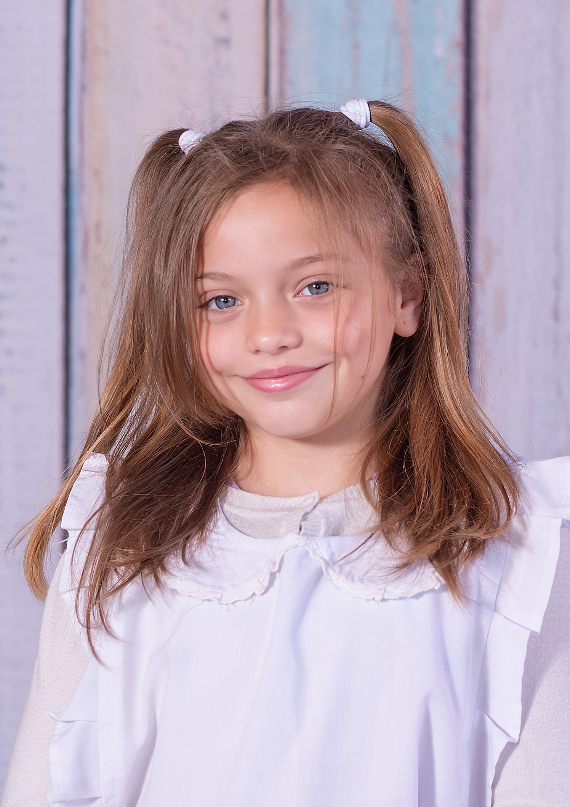

Sesiones Fotográficas
Dulce espera
La propuesta es capturar la dulzura de la maternidad, incorporando prendas de vestir y accesorios diseñados y confeccionados por Valeria. Las sesiones pueden ser en estudio o en exteriores, y duran aproximadamente 2 hs. Toda la indumentaria es provista. Se entregan 20 fotografías digitales de alta definición, procesadas en Photoshop.
$6.000
Recién Nacidos
En este espacio la idea es fotografíar lo que dura instantes: sus piecitos pequeños escamados, la postura intraútero, la ternura de su carita. Para ello se utilizan accesorios, prendas de vestir y utilería diseñados y confeccionados por Valeria. La sesión dura aproximadamente 3 horas, y en ese espacio se realizarán todas las propuestas posibles. Se realiza entre los 3 y 10 días de vida del recién nacido. No es necesario que traigas ninguna ropa. Se entregan 20 fotografías digitales de alta definición, procesadas en Photoshop.
$8.000
Bebés
Este es el momento de jueos. Desde el "smash the cake" hasta las princesas. Todo es válido. Hay múltiples propuestas para que los bebés se diviertan y las fotografías sean únicas. Las sesiones pueden ser en estudio o en exteriores. La misma dura 2 horas, y en ese espacio se realizarán todas las propuestas posibles. No es necesario que traigas ninguna prenda de vestir ni accesorios. Se entregan 20 fotografías digitales de alta definición, procesadas en Photoshop.
$8.000
Niños

Aquí surge la magia. Lo principal es que sean "ellos". La vestimenta será acordada con Valeria. Las sesiones se realizan en exteriores y duran 2 hs. Se entregan 20 fotografías digitales de alta definición, procesadas en Photoshop.
$6.000
Teens
Este es un espacio especial brindado para que puedan "brillar". La vestimenta y los accesorios serán acordados con Valeria. Las sesiones se realizan en exteriores y duran 2 hs. Se entregan 20 fotografías digitales de alta definición, procesadas en Photoshop.
$6.000
Fine Art
Fine Art es un tipo especial de retratos, adaptado al gusto de cada fotógrafo, inspirado en los cuadros del Renacimiento. Si te gusta este estilo, las sesiones duran 2 hs y se realizan en estudios. Los accesorios son provistos por Valeria y la vestimenta debe ser acordada con ella. Se entregan 20 fotografías digitales de alta definición, procesadas en Photoshop.
$6.000
Navideñas familiares
El objetivo de este tipo de fotografías es retratar a todos los niños de la familia todos los años durante la época navideña. La idea es poder tener una colección de fotografías en las cuales puedas apreciar el crecimiento de los pequeños y los nuevos integrantes de la familia (bebés) que se van incorporando tras el paso de los años. La sesión dura una hora y se realiza en estudios. La vestimenta se acuerda con Valeria. Los accesorios y utilería son provistos por ella. Se entregan 5 fotografías digitales de alta definición, procesadas en Photoshop.
$4.000
Primera Comunión
La propuesta es capturar este precioso momento mediante fotografías tomadas previamente al evento con la vestimenta característica para armar un "book". Se realiza en exteriores. No se realizan fotografías de la ceremonia ni de la fiesta de la Primera Comunión. Se entregan 20 fotografías digitales de alta definición, procesadas en Photoshop.
$6.000
Retrato escolar
En el clásico retrato escolar, lo nuevo es crear fotografías con mucha luz y color. Se entrega una carpeta con una fotografía individual y una fotografía grupal, ambas impresas. Se realiza en la institución escolar. El precio expresado es por niño.
$700